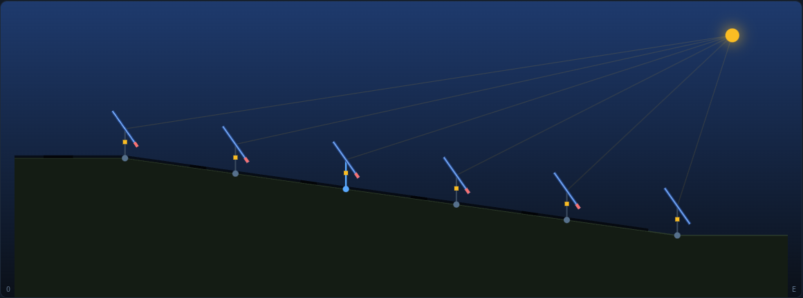
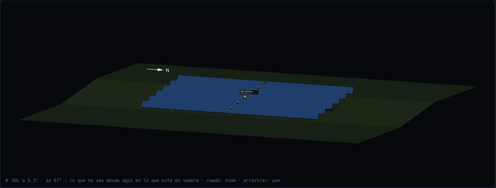
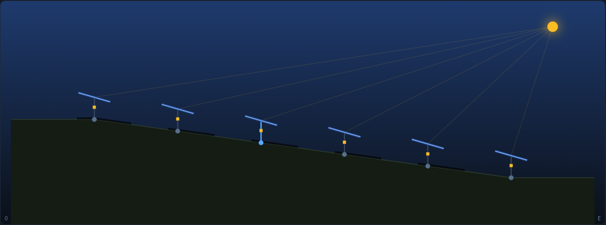
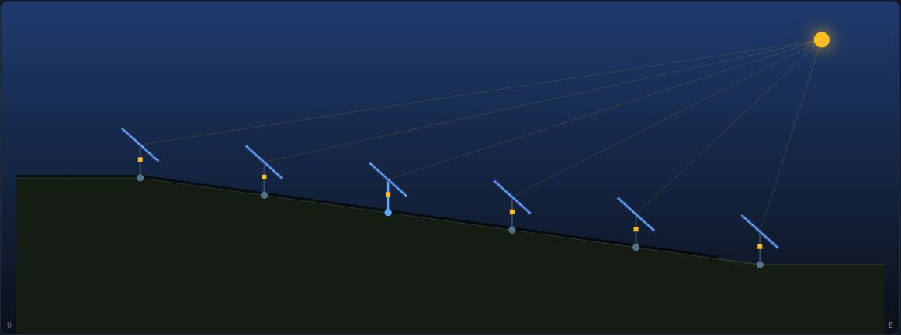
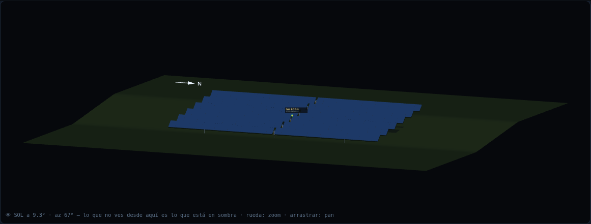
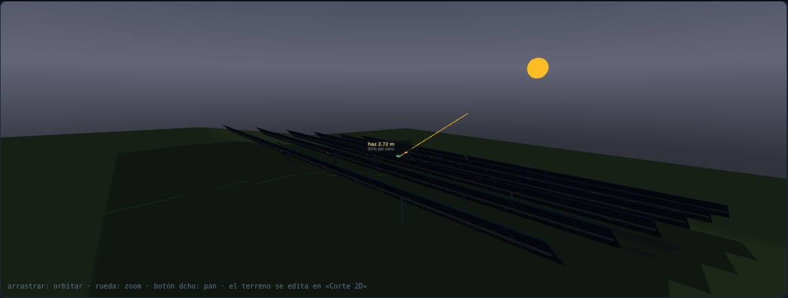
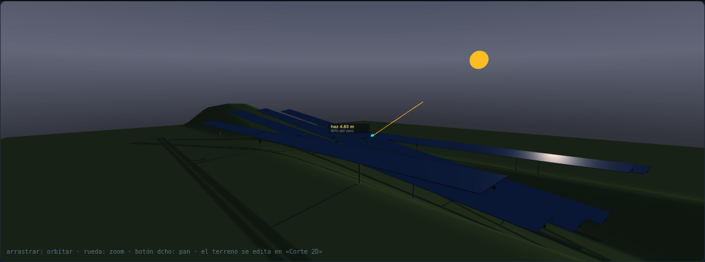
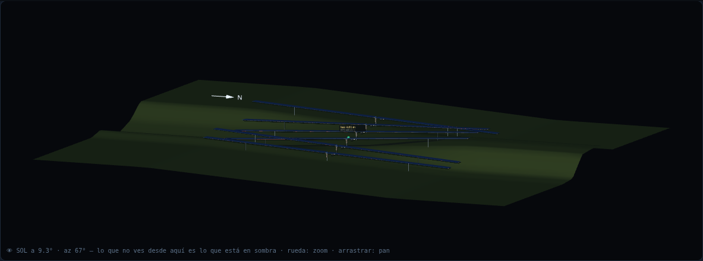
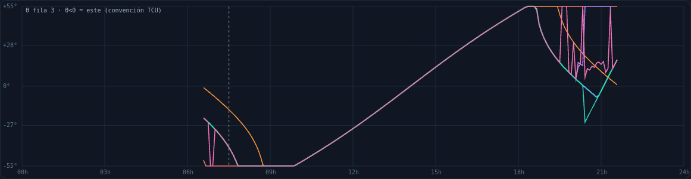
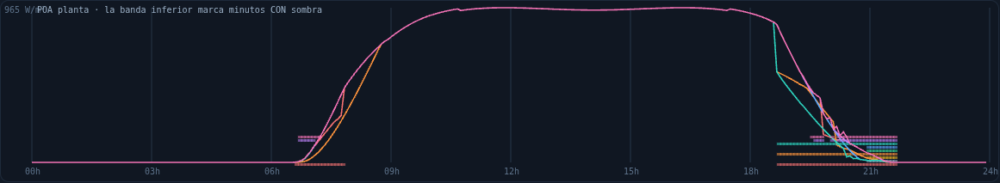

Backtracking en terreno real: base teórica, cálculos y comportamiento de cada algoritmo
Documento de referencia del simulador backtracking.html (Factiun). Cada política de seguimiento se presenta con su base, la fórmula o el procedimiento que la calcula, lo que optimiza, su criterio frente a la sombra, un cálculo numérico sobre un caso de referencia reproducible y renders del simulador que muestran su objetivo y su funcionamiento. Todo lo que aquí se afirma se puede reproducir: los números salen de la misma física que ejecuta la página, las figuras se han generado con ella y las cifras de verificación provienen de la batería de tests y del barrido de terrenos del repositorio.
Contenido
- Marco común: geometría, sol, irradiancia, POA y sombra
- Caso de referencia y cálculo paso a paso
- Astronómico (sin backtracking)
- BT2D plano (pvlib sin pendiente)
- Global (un motor, un ángulo)
- Row (fila a fila con su terreno)
- Pairwise (por pareja, torsión incluida)
- True-3D (bisección en 3D)
- Min ground light (agrivoltaica inversa)
- Energy-optimal (Deeptrack, f común)
- Óptimo libre (f por accionamiento)
- Acople por accionamiento y reparación global
- Comparativa del día
- Verificación: lo que se prueba y con qué cifras
- Límites conocidos
- Auditoría externa: qué cambió y qué se midió
1. Marco común
1.1 Geometría y convención de signos
Filas de seguidores de un eje con el tubo orientado norte–sur (azimut de eje azeje, 0° por defecto). Cada fila r tiene una cota de eje zr y un tilt N-S (inclinación del tubo a lo largo, positiva subiendo hacia el norte). Entre filas vecinas hay un pitch P (6,00 m) y una pendiente transversal sp de la pareja, deducida de las cotas:
cross_axis_tilt de pvlib)El colector tiene un ancho de cuerda w = 2,382 m y la cara del módulo va a z0 = 0,17 m sobre el eje. El GCR es un dato derivado, w/P = 0,397, nunca un input. El ángulo de giro θ es el de la física del simulador: θ > 0 = mesa mirando al este (borde este abajo). El HUD, la tabla y el slider manual muestran el signo contrario (convención TCU, «θ < 0 = este»); el cruce es un único factor TH_DISP = −1 aplicado solo al presentar.
Cada tramo (tracker) se describe por su intervalo a lo largo del eje [n0, n1]; con quiebro en la rótula o planta medida, cada mesa (media viga) lleva además su tilt y sus dos cotas extremas.
1.2 Sol e irradiancia
Posición solar por el algoritmo NOAA (sol.js), con refracción, en hora local del sitio (el huso se deduce de la longitud y, en la península, con la regla de verano/invierno). Cielo claro por Ineichen–Perez con turbidez de Linke TL y masa de aire absoluta (presión de la altitud), sin el realce de Perez —el factor exp(0,01·am1,8), que pvlib trae desactivado por defecto y que a sol bajo inflaba la difusa un 67 %—; se puede pedir a sabiendas con perezEnhancement. La nubosidad reduce GHI y DNI de forma declarada y cierra la DHI por balance.
La irradiancia sobre el plano de cada fila (POA) se compone de haz, circunsolar (Perez), difusa de cielo y albedo, con ángulo de incidencia AOI y el modificador ASHRAE K(AOI) = 1 − b0(1/cos AOI − 1), b0 = 0,05:
donde β es la inclinación de la superficie resultante de (θ, tilt N-S, azeje) y F1, F2 los coeficientes de Perez del bin de claridad ε. La POA de planta es la media de las POA por fila (no la POA del ángulo medio: en terreno irregular difieren).
1.3 La sombra: el contador
El contador de sombra es un ray-cast 3D multi-emisora a todas horas: para cada mesa receptora se muestrean estaciones a lo largo del eje y, en cada una, se lanza el rayo solar desde la cuerda hacia todas las mesas del lado del sol dentro de su alcance (planos de módulo con su canto y, en la sombra publicada, también la viga de torsión). En cada estación la fracción de cuerda tapada es analítica (intersección de intervalos proyectados perpendicularmente al rayo), no un muestreo de puntos:
con ψ el ángulo del rayo en el plano transversal (el «ángulo de seguimiento verdadero»). Con solape axial parcial (tracker corto delante de uno largo, tresbolillo, huecos) la sombra se pondera por las estaciones realmente cubiertas.
Cuántas estaciones (v1.57): una cada 4 m a lo largo de la mesa, y una cada 2 m si dos filas vecinas difieren más de 0,5° de tilt N-S, entre 8 y 64. Con 8 fijas —lo anterior— una mesa de 65 m se muestreaba cada 8 m y con torsión perdía manchas enteras: en el caso B, 0 % publicado donde el cálculo convergido da 4,5 %. Las plantas medidas se quedan en 8, donde está medido que basta (≤ 0,7 pp frente a 32, +0,007 % anual) y manda el tiempo de cálculo de la planta entera. El contador separa la sombra de planos de la de estructura (viga + canto) y dice de quién viene cada sombra (fila emisora o terreno).
La sombra óptica se convierte en pérdida eléctrica con el modelo Martinez por subcadenas de diodos de bypass (nb = 2 por mesa):
El residual de tangencia (mm) mide, para una pareja y unos θ dados, cuánto entra el rayo del borde alto de la emisora en el interior de la receptora (negativo) o cuánto hueco queda (positivo): es el árbitro geométrico 3D con el que true-3D y el acople deciden.
La luz al suelo es la fracción de haz que llega al terreno entre filas según el modelo de láminas infinitas de pvlib: 1 − GCR·|cos β + sin β·tan φ|, con φ el ángulo de proyección del sol sobre el plano transversal.
2. Caso de referencia y cálculo paso a paso
Se usa el mismo caso para todas las políticas. Es reproducible en la página con los presets indicados y en Node con la física extraída del HTML.
| Dato | Valor | Dato | Valor |
|---|---|---|---|
| Sitio | Zaragoza · 41,5763° N · 0,7981° O · 300 m | Fecha y hora | 21-jun-2026 · 07:30 local (05:30 UTC) |
| Sol (NOAA) | elevación 9,28° · azimut 66,7° (E-NE) · cénit 80,72° | Cielo claro (Ineichen, TL 3,5) | GHI 80 · DNI 300 · DHI 32 W/m² (≡ pvlib) |
| Filas | 6 · pitch 6,00 m · cuerda 2,382 m · GCR 0,397 | Terreno (escenario A) | preset «Pendiente 8°»: la cota cae 0,843 m por fila hacia el este; tilt N-S 0 |
| Límite mecánico | ±55° | Escenario B | el mismo, con tilt N-S «aleatorio 4°» por fila: −3,41 · +1,63 · +3,22 · +3,76 · −3,67 · −3,06 °; mesas de 64,7 m |
2.1 El seguimiento astronómico y el backtracking de pvlib, paso a paso
El ángulo ideal ω es el que anula el ángulo de incidencia en el plano transversal al eje. Con el sol a 9,28° de altura y az 66,7°, el vector solar en el marco del eje (eje N-S, sin tilt) da:
tracker_theta)El backtracking de pvlib (Anderson & Mikofski, 2020) reduce ese giro cuando la fila vecina sombrearía, usando la distancia entre ejes proyectada y la pendiente transversal s:
| Pendiente usada | d | t | acos t | θ resultante | Quién lo usa |
|---|---|---|---|---|---|
| 0° (terreno plano) | 2,519 | 0,4412 | 63,82° | 16,10° | BT2D plano |
| +8° (cae hacia el sol, escenario A) | 2,544 | 0,7898 | 37,83° | 42,08° | Global, Row, Pairwise (candidato de pareja) |
| −8° (el terreno sube hacia el sol) | 2,544 | 0,0927 | 84,68° | −4,77° (79,91 − 84,68: la corrección pasa de cero) | (referencia: el mismo terreno visto del lado contrario) |
La lectura física: cuando el terreno cae hacia el sol (la emisora está más baja que la receptora) la fila vecina tapa menos y se puede seguir mucho más (42° frente a 16°). Un controlador que ignora el relieve (BT2D plano) se queda a 16° y pierde POA sin necesidad; uno que lo cree al revés sombrea.
2.2 Desglose de la POA de una fila
Fila 3 del escenario A con seguimiento astronómico (θ = 55°, el tope mecánico, porque el ideal de 79,9° lo excede):
| Componente | W/m² | Comentario |
|---|---|---|
| Haz: DNI·cos AOI·K | 248,4 | a 55° el AOI aún es grande (el ideal era 79,9°) |
| Circunsolar (Perez, F1) | 60,8 | viaja con el haz: lo tapa la sombra en proporción al área |
| Difusa de cielo | 21,2 | (1−F1)(1+cos β)/2 + F2 sin β |
| Albedo (ρ = 0,20) | 3,2 | GHI·ρ·(1−cos β)/2 |
| POA sin sombra | 333,5 | la fila 6 (última al este) recibe exactamente esto: no tiene emisora |
| Sombra del contador | 12,2 % | la fila 4 (más baja) le tapa el 12,2 % de la cuerda por el borde bajo |
| Pérdida Martinez (2 bypass) | 47,1 % | por estación axial: donde la sombra llega, ⌈2·f⌉/2 = 0,5; el extremo de mesa al que no llega entra a 0 |
| POA neta de la fila | 209,3 | 248,4·0,529 + 60,8·0,878 + 21,2 + 3,2 |
Aquí está la razón de ser del backtracking: un 12,2 % de sombra óptica cuesta un 47 % del haz. Cualquier política que deje esa sombra tiene que pagarla con ese multiplicador.
3. Las políticas
Cada política recibe el sol (cénit, azimut), la descripción del terreno T y, las que optimizan energía, la irradiancia; devuelve un θ por fila. Las etiquetas TCU y NCU dicen dónde puede vivir cada una: en el controlador de fila con la información de su registro, o solo en la unidad de red que ve la planta entera.
3.1 Astronómico TCU
- Base
singleaxisde pvlib sin backtracking: θ = ω limitado a ±θmáx, con el tilt N-S del eje y el azimut de eje configurados. Es el seguimiento «puro».- Qué optimiza
- La irradiancia sobre cada módulo como si estuviera solo. No mira a la vecina.
- Criterio de sombra
- Ninguno. A sol bajo se auto-sombrea; es la referencia contra la que se mide lo que cuesta y lo que vale el backtracking.
- En el caso A
- θ = 55° en las seis filas (el ideal de 79,9° excede el tope). Sombra 12,2 % en las filas 1–5, 0 en la 6. POA de planta 230,0 W/m².


3.2 BT2D plano TCU
- Base
- El backtracking de pvlib con
cross_axis_tilt = 0y tilt de eje 0: el controlador de fábrica sin configurar, que cree que el terreno es plano. Un único ángulo para toda la planta. - Qué optimiza
- La ausencia de sombra en un terreno plano imaginario. Sobre terreno real es un error de registro, no una política: sombrea donde el terreno sube hacia el sol y desperdicia ángulo donde baja.
- En el caso A
- θ = 16,10° (la fila del cálculo de la tabla 2.1). Sombra 0 (aquí el terreno le favorece), pero POA 161,8 W/m²: un 44 % menos que las políticas que sí conocen la pendiente.
- En el caso B
- Con torsión N-S ya sombrea: 20,8 % en la fila 1 y 18,6 % en la 4, con POA 148.

3.3 Global NCU
- Base
- «Un motor, un ángulo»: pvlib con backtracking sobre la pendiente media de la planta (y el pitch y tilt medios).
- Qué optimiza
- Sombra cero si el terreno es uniforme; con relieve variable acierta en la media y falla en los extremos.
- En el caso A
- La pendiente es uniforme (8° en todas las parejas), así que coincide con Row y Pairwise: θ = 42,08°, sombra 0, POA 290,4 W/m². Es la degeneración exacta que la batería comprueba (terreno uniforme ⇒ global = row = pairwise).
- En el caso B
- θ = 41,7° para todas: 29,3 % de sombra en la fila 1 y 33,3 % en la 4; POA 221.
3.4 Row TCU
- Base
- Cada fila calcula pvlib con backtracking sobre su terreno local: la media de las pendientes de sus dos parejas, su tilt N-S y el pitch medio a sus vecinas (regla
compute_bt_angles_rowwise). Es lo que puede hacer una TCU con su registro y sin comunicación. - Qué optimiza
- Sombra cero en el modelo 2.5D de cada fila, sin coordinarse: no sabe a qué ángulo va la vecina.
- Criterio de sombra
- El de pvlib por fila. No mira al contador ni repara: cuando dos vecinas deciden ángulos distintos sobre el mismo vano, una de las dos sombrea.
- En el caso A
- θ = 42,08° (idéntico a Global por la uniformidad), sombra 0, POA 290,4.
- En el caso B
- θ por fila 46,6 · 40,1 · 38,3 · 37,7 · 46,9 · 46,1°. Sombra 29,0 % (fila 1), 11,7, 14,0, 35,1, 4,0, 0. POA 224. El globo del simulador lo marca como «evitable» cuando existe un θ uniforme con menos sombra: Row no lo evita por diseño.

3.5 Pairwise TCU
- Base
- Por pareja de filas: pvlib con backtracking sobre la pendiente transversal de esa pareja y el tilt medio de sus dos ejes. La fila interior toma el candidato más backtrackeado de sus dos parejas:
- Torsión
- Si las dos vigas de una pareja no son paralelas (tilts N-S distintos), el candidato 2.5D ya no garantiza nada: se comprueba con el ray-cast 3D en varias estaciones a lo largo de la mesa y se barre el ángulo, en pasos de 0,5°, hasta el primer θ sin sombra. Después entran el acople por accionamiento y la reparación global.
- El rango legítimo (v1.57)
- Todo ese barrido vive entre el seguimiento verdadero ψ y la paralela al terreno (con la horizontal siempre dentro, y 2° de margen). Girar más allá de la horizontal en contra del sol también «quita sombra» —levanta el borde bajo fuera de la sombra de la vecina— y el barrido se iba allí: en el caso B la auditoría midió mesas casi de canto al sol (ángulo de incidencia 90°), con sombra cero porque no había haz que sombrear y POA 54 donde el astronómico daba 713. El backtracking de pvlib nunca pasa de la paralela al terreno; ese es el límite.
- Qué optimiza
- Sombra de planos cero garantizada con el mínimo giro necesario para ello. La estructura (viga y canto) deja un residuo pequeño y declarado, sobre todo en tangencia a sol rasante.
- En el caso A
- Candidatos de pareja 42,08° en las cinco parejas ⇒ θ = 42,08° en todas; fs analítica de cada pareja = 0,00 %; POA 290,4 W/m² (+26 % sobre el astronómico, que pierde casi medio haz por el Martinez).
- En el caso B
- Con tilts de hasta 3,8° entre vecinas y el sol a 9°, no existe ningún θ del rango legítimo que deje las seis filas sin sombra. La política publica θ −2 · −2 · 15,7 · −2 · −2 · 38° con 13,4 % en la peor fila y POA 105, y el HUD lo marca como irreducible: se cobra en el Martinez, no se maquilla. Antes de la auditoría esto se publicaba como «sombra 0 %» con POA 38 —una postura de canto— y era falso por partida doble.
- Guardia de energía (v1.57)
- Cuando la reparación no logra la garantía (más del 2 % en la fila peor), solo publica su candidato si no rinde menos POA que la consigna que repara. Una política que no puede cumplir su promesa no debe además tirar producción: en el caso B a las 07:30 esto son 108 W/m² en vez de 53.



3.6 True-3D TCU
- Base
- Port de
compute_bt_angles_3d. Para cada pareja se busca por bisección (36 iteraciones) la magnitud máxima de giro |θ| tal que el rayo solar por el borde alto de la emisora no entra en la receptora, en 3D pleno: azimut solar, tilt N-S del eje y pendiente transversal a la vez. La cuerda de la mesa en el marco del eje inclinado es:
y se resuelve la intersección del rayo desde el borde alto Ph con el plano de la receptora (normal n = c × a): sombrea si la coordenada de impacto a lo largo de la cuerda queda dentro de la pala. La fila toma el mínimo de sus dos parejas menos un margen de 0,5°, nunca por debajo de la baseline pvlib donde esta es 3D-segura, y con «deferral» exacto a la baseline con el sol por debajo de 8° (cénit ≥ 82°). Sin tilt N-S el resultado es pairwise (guard 2.5D, comprobado en la batería).
- Qué optimiza
- La misma garantía de no sombra que pairwise, pero decidida con la geometría 3D completa: más empinado que el 2.5D donde el 2.5D es conservador, y detecta contactos que el 2.5D no ve (deflexión axial de la sombra).
- En el caso A
- Sin tilt N-S ⇒ idéntico a pairwise: 42,08°, sombra 0, POA 290,4. La magnitud máxima 3D por pareja es también 42,08°.
- En el caso B
- θ 0 · 0 · 12,3 · 0 · 0 · 32,8°, sombra 13,8 % en la peor fila (irreducible), POA 105. El cénit es 80,7°, por debajo del umbral de deferral (82°), así que la bisección 3D sí actúa; lo que fija el resultado es la reparación. El documento anterior lo atribuía al deferral: era incorrecto.


3.7 Min ground light NCU
- Base
- Port de
compute_bt_angles_min_ground_light: parte del pairwise ya acoplado y empina cada unidad de accionamiento por ascenso coordinado (bisección de 14 pasos por unidad, hasta 3 pasadas) mientras (a) la sombra física del contador siga en cero y (b) la luz al suelo total baje. - Qué optimiza
- La mínima luz directa al suelo entre filas (agrivoltaica inversa: máxima cobertura del terreno) sin aceptar sombra en los módulos. Nunca rinde menos que pairwise porque parte de él y solo empina si no sombrea.
- En el caso A
- Pairwise ya está en tangencia (residual ≈ 0 mm): no puede empinar sin sombrear ⇒ igual que pairwise: 42,08°, POA 290,4, luz al suelo 0 %.
- En el caso B
- Igual que pairwise por la misma razón (no hay margen para empinar sin sombrear más); la luz al suelo la publica el HUD («Luz al suelo», ponderada por DNI en el KPI del día): aquí 45,6 %, frente a 0 % del astronómico.
3.8 Energy-optimal NCU
- Base
- Deeptrack: entre la posición pairwise (sin sombra, θ0) y la astronómica (máximo haz, θ1) hay un segmento; se elige la fracción común f ∈ {0, ¼, ½, ¾, 1} que maximiza la POA de planta neta del modelo Martinez:
La búsqueda usa el evaluador rápido 2.5D; el candidato ganador se veta con el contador exacto contra los dos extremos (f = 0 y f = 1) y, desde v1.57, contra el pairwise publicado (el reparado): los tres son candidatos, así que por construcción nunca rinde menos que ninguno bajo la métrica publicada. Antes el veto solo miraba la base sin reparar, que difiere de lo publicado en 17 de los 90 instantes del día del caso B: la garantía se cumplía en la práctica (barrido: 0 violaciones) pero no estaba construida. El acople por accionamiento se aplica a los dos extremos antes de interpolar, así toda candidata es ejecutable por los motores.
- Qué optimiza
- Energía de planta en el instante, aceptando sombra cuando apuntar mejor la paga. Trabaja sobre la rejilla de 5 fracciones (fiel al core).
- En el caso A
- La rejilla completa, evaluada con el contador exacto:
| f | 0 (pairwise) | ¼ | ½ | ¾ | 1 (astro) |
|---|---|---|---|---|---|
| θ (todas las filas) | 42,08° | 45,31° | 48,54° | 51,77° | 55,00° |
| Sombra máxima | 0 % | 4,0 % | 7,1 % | 9,8 % | 12,2 % |
| POA planta neta | 290,4 | 207,5 | 219,3 | 224,9 | 230,0 |
Gana f = 0: la primera sombra, por pequeña que sea (4 %), ya cuesta media mesa por el Martinez (⌈2·0,04⌉/2 = 0,5) y la ganancia de haz de 3° de giro no lo compensa. En este terreno el óptimo energético coincide con no sombrear.
- En el caso B
- La situación contraria: la sombra es irreducible, así que renunciar a ella no compra nada y aplanarse cuesta casi toda la POA (105 W/m²) mientras el astronómico rinde 231 con un 38 % de sombra. Gana f = 1: energy-optimal se va al astronómico (POA 231, +121 % sobre pairwise). El HUD lo muestra en la tarjeta f.

3.9 Óptimo libre NCU
- Base
- Como energy-optimal, pero cada unidad de accionamiento (fila en monofila, pareja de filas en bifila) lleva su propia fracción fg, en una rejilla de 13 valores que baja hasta −0,5 (más plano que pairwise: con torsión el óptimo real puede vivir fuera del segmento). Ascenso coordinado: cada unidad escanea su rejilla mirando solo sus filas y las vecinas inmediatas, en barridos alternos hasta converger (máximo 8). Arranca en la mejor f común con el mismo evaluador que energy-optimal, así que nunca rinde menos que él en el instante de decisión.
- Qué optimiza
- La POA de planta neta con tantos grados de libertad como accionamientos (427 en Ayora). En Ayora real: pairwise +0,71 % con la f común, +1,03 % libre.
- En el caso A
- Todas las unidades en f = 0 (la tarjeta muestra el rango 0…0 de las 6 unidades): 42,08°, POA 290,4.
- En el caso B
- Todas en f = 1: 55°, POA 231, como energy-optimal.
- Consignas retenidas
- Los optimizadores deciden en la rejilla de 5 min; entre dos decisiones la escena evalúa la consigna retenida (con el límite de giro del actuador) al sol del minuto pedido. Por eso, en un minuto intermedio y con nubes, el óptimo libre puede marcar 1 W/m² menos que energy-optimal: cada uno mantiene una consigna distinta y se comparan fuera del instante en que se decidieron. La garantía «óptimo libre ≥ energy-optimal ≥ pairwise» se cumple en los instantes de decisión y el barrido la mide: 0 violaciones en 4.224 instantes.
3.10 Manual
Un θ común para toda la planta, o uno por fila («por fila»), fijado con el slider en convención TCU (− = este). No es una política: es la herramienta para comprobar el contador y el render en cualquier posición, incluida una mesa de espaldas al sol. El corte 2D decide por geometría por qué borde entra la sombra (el borde de la receptora que cae dentro de la banda de rayos de la emisora), y el banco de render lo verifica con un ray-cast 2D independiente.
4. Acople por accionamiento y reparación global
Acople. En bifila (rígida o quebrada) las dos filas de un grupo giran con el mismo motor: la consigna es un θ común. Para las políticas que garantizan no sombra se toma el candidato del grupo con menor |θ| y se refina por bisección hasta la tangencia (medida por la fracción sombreada 2.5D de cada pareja o, en true-3D, por el residual en mm), buscando el ángulo sin sombra más cercano al actual. Con terreno uniforme monofila = bifila = quebrada (degeneración comprobada).
Reparación global (presets). Tras el acople, si el contador de planos (con las mismas estaciones que se publican) deja alguna fila con más del 2 % de sombra de otra fila, se arranca del mejor θ uniforme del instante (barrido de 5° y refino de 2,5°) y se mueven las emisoras implicadas. El objetivo es primero la fila peor y después la suma. Desde v1.57 lleva además tres salvaguardas que salieron de la auditoría: cada candidato vive en el rango legítimo de su unidad de accionamiento (entre el seguimiento verdadero y la paralela al terreno, con la horizontal dentro); una restitución devuelve a su consigna de partida las unidades que el arranque uniforme movió sin ganar nada de sombra; y una guardia de energía impide publicar un candidato que no logra la garantía y además rinde menos POA que lo que repara. La reparación no entra en plantas medidas: allí la consigna va por mesa con las cotas de cada tramo.
5. Comparativa del día


| Política | Caso A (pendiente 8°, sin torsión) | Caso B (con tilt N-S aleatorio 4°) | ||||
|---|---|---|---|---|---|---|
| θ | sombra máx | POA W/m² | θ | sombra máx | POA W/m² | |
| Astronómico | 55,0 | 12,2 % | 230,0 | 55,0 | 38,2 % | 231 |
| BT2D plano | 16,1 | 0 | 161,8 | 16,1 | 20,8 % | 148 |
| Global | 42,1 | 0 | 290,4 | 41,7 | 33,3 % | 221 |
| Row | 42,1 | 0 | 290,4 | 37,7…46,9 | 35,1 % | 224 |
| Pairwise | 42,1 | 0 | 290,4 | −2…38 | 13,4 % (irreducible) | 105 |
| True-3D | 42,1 | 0 | 290,4 | 0…32,8 | 13,8 % (irreducible) | 105 |
| Min ground light | 42,1 | 0 | 290,4 | −2…38 | 13,4 % (irreducible) | 105 |
| Energy-optimal | 42,1 (f=0) | 0 | 290,4 | 55,0 (f=1) | 38,2 % | 231 |
| Óptimo libre | 42,1 | 0 | 290,4 | 55,0 | 38,2 % | 231 |
Las dos columnas resumen el argumento del documento: con relieve transversal uniforme, conocer la pendiente vale un 26 % de POA a esa hora frente al astronómico y un 79 % frente a un controlador sin configurar; con torsión N-S entre vecinas y sol rasante, la sombra ya no se puede evitar —y una política que lo prometa está mintiendo o tirando energía—, así que el criterio energético es el que decide bien. Ninguna política domina a todas horas: por eso el informe del emplazamiento y los KPI del día (sombra ponderada por energía, minutos con sombra relevante, horas de backtracking, pérdida Martinez, peor momento) están para cada una.
6. Verificación: lo que se prueba y con qué cifras
- Batería del simulador (
tools/test_backtracking_sim.mjs, en CI) - 186 comprobaciones. Entre ellas: pvlib
singleaxis≡ fórmula cerrada en llano; pairwise ⇒ sombra de planos cero en llano, ±8° y ondulado; la fracción analítica ≡ ray-cast bruto en 200 casos aleatorios (±1/300); true-3D nunca más plano que la baseline donde ella es 3D-segura y ≡ baseline sin tilt N-S; energy-optimal ≥ pairwise y óptimo libre ≥ energy-optimal bajo el contador exacto; terreno uniforme ⇒ global = row = pairwise y monofila = bifila = quebrada; el contador ≡ oráculo sin podas sobre Ayora en 4 regímenes (≤ 0,1 pp); convergencia MV 8 vs 32 (≤ 0,7 pp, +0,007 % anual); rótula: contador ≡ oráculo con quiebro. - Barrido de terrenos (
tools/barrido_terrenos.mjs, 40 configuraciones × 3 fechas × cada 20 min) - A contador ≡ oráculo: 1.424 instantes, peor |Δ| 0,000 pp. B sombra de planos con pairwise/true-3D/mgl: 12.672 instantes-política, 2 con un θ ejecutable mejor (eran 654 antes de la auditoría) y 3.116 con sombra que ningún θ evita —esa es la cifra que creció al dejar de llamar «sin sombra» a lo que no lo era—. B2 sombra publicada con estructura y 32 estaciones: 65 fallos de política. C energía: 4.152 instantes, 0 violaciones. D acople por accionamiento: 11.105, 0 violaciones. E θ finitos y en rango: 21.120, 0 violaciones. F (v1.57) convergencia de la malla publicada frente a 128 estaciones: peor |Δ| 2,43 pp y ninguna mancha de más del 2 % publicada por debajo de su mitad. G (v1.57) mesas fuera de su rango legítimo: 80 de 12.672 instantes-política, todas por menos de 8° y ninguna de canto (antes de la auditoría las había a 60–90° del seguimiento verdadero); son el candidato de pvlib de un vano vecino propagado por el acople, y quedan declaradas.
- Oráculo geométrico independiente (v1.57, en la batería)
- Rectángulos con la rotación exacta sobre el eje inclinado —c = (cos θ, sin θ·sin τ, −sin θ·cos τ), a = (0, cos τ, sin τ)— y 200×400 muestras por mesa, escrito sin compartir una línea con el contador. Coincide con el contador convergido en ≤ 0,5 pp en los casos A y B a cuatro ángulos. El oráculo anterior comparte geometría y estaciones con el contador: vale para las podas y el álgebra de intervalos, no para el modelo ni la convergencia.
- Render ≡ física (
tools/test_render_sol.mjs, navegador, en CI) - Desde la cámara del sol no se ve ningún píxel rojo (la silueta pintada nunca queda donde el sol llega) con quiebro en la rótula a sol de 10° y con cresta a sol de 14°; en el corte 2D el borde por el que entra la sombra coincide con un ray-cast 2D independiente, con la mesa de cara y de espaldas al sol; el θ manual cruza el signo de ida y vuelta (slider ≡ HUD).
- Careo con producción
- El contador del simulador y el del programa de producción por string son idénticos bit a bit en el interior de la planta (
tools/careo_produccion.mjs, cada 120 min).
7. Límites conocidos
- Hueco del motor en presets. La física de los presets sin quiebro modela cada tramo como vidrio continuo; el modelo 3D lleva el hueco de 0,55 m entre mesas. Desde el sol se ve una tira de sombra pintada de ~0,5 m por fila a través de ese hueco (la física cobra un 0,85 % del largo de más). Con quiebro en la rótula y en plantas medidas las mesas ya van partidas. Pendiente: partir todas las mesas en presets.
- Estructura en tangencia. Las políticas de no sombra garantizan cero en planos; la viga y el canto dejan un residuo medido (B2) y declarado, no corregido: se probó una reparación consciente de la estructura y no mejoraba en el barrido.
- Torsión: la garantía de no sombra deja de existir. Con tilts N-S distintos entre vecinas y mesas largas, no hay ningún ángulo del rango legítimo que deje las filas sin sombra, y esto no pasa solo «a sol rasante»: en el caso B ocurre buena parte de la mañana y de la tarde. Las políticas de la familia sin sombra publican entonces el mínimo que alcanzan y lo marcan como irreducible; el KPI del día lo cobra por Martinez. Para decidir consignas en un terreno así, la referencia son las políticas energéticas, no ellas.
- Enmascaramiento de difusa. Energy-optimal y óptimo libre no descuentan la difusa de cielo que tapa la fila vecina (solo haz y circunsolar): sesgo pequeño a favor de empinar.
- Malla axial en plantas medidas. Ayora y San José siguen con 8 estaciones por mesa, donde está medido que basta (vigas casi paralelas, ≤ 0,7 pp frente a 32) y donde el tiempo de cálculo de la planta entera es el límite. Si alguna vez se carga una planta medida con torsión apreciable entre vigas vecinas, habrá que subirla también allí.
- El tercer decimal de la POA. El modificador de ángulo se aplica a la difusa isótropa y al albedo con el ángulo equivalente de Duffie-Beckman, que no es lo que hace pvlib: el revisor midió 21,2 frente a 22,6 W/m² en la difusa de cielo y 3,2 frente a 3,4 en el albedo del caso A. Es una diferencia declarada y del mismo signo para todas las políticas.
- Perfil «quebrado (dos aguas)». Es un perfil por filas (mitad a +v, mitad a −v); con líneas largas el terreno entre las dos filas centrales salta 2·v a lo largo y en 3D aparece como una cresta real. El terreno «a dos aguas» a lo largo de la fila es el preset «quiebro en la rótula».
8. Auditoría externa: qué cambió y qué se midió
En septiembre de 2026 un revisor independiente auditó esta plataforma: clonó el repositorio, extrajo el bloque de física y lo ejecutó en Node con su propio arnés, recalculó el caso de referencia con pvlib 0.15.2 y escribió un ray-cast 3D en numpy con la rotación exacta para carearlo contra el contador. Lo que sigue es su lista de hallazgos y lo que se hizo con cada uno. Las cifras de «después» están medidas con la física de esta versión.
| Hallazgo | Qué pasaba | Qué se hizo | Medido |
|---|---|---|---|
| H1 · muestreo axial | 8 estaciones fijas por mesa: en una mesa de 65 m con torsión, una mancha de 6,3 % convergido salía 3,3 %, y a −20° una de 4,5 % salía 0,0 %. El oráculo de la batería usaba las mismas 8 estaciones, así que no podía verlo. | Estaciones adaptativas: una cada 4 m, cada 2 m con torsión ≥ 0,5°, entre 8 y 64. También en la reparación, en el evaluador por pareja y en el oráculo. | |Δ| frente a 256 estaciones ≤ 1,5 pp en el caso B a cuatro ángulos, y ninguna mancha de más del 2 % se publica por debajo de su mitad. Coste: un día de 8 filas con torsión pasa de 0,2 a 1,1 s. |
| H2 · mesas de canto | El barrido de las políticas sin sombra no tenía tope: giraba más allá de la horizontal en contra del sol hasta dejar la mesa casi paralela al rayo. La sombra salía cero porque no había haz que sombrear. Con el sol a 23°, POA 54 frente a 713 del astronómico. | Rango legítimo por unidad de accionamiento: entre el seguimiento verdadero y la paralela al terreno, con la horizontal dentro. Más restitución de las unidades movidas en balde y guardia de energía cuando la sombra es irreducible. El HUD publica «irreducible». | En el caso B, el ángulo de incidencia peor con el sol por encima de 15° baja de 91° a 70°; la POA de pairwise a las 08:50 pasa de 54 a 468 W/m², y a las 18:10 de 67 a 598. |
| H3 · garantía del optimizador | El veto de energy-optimal comparaba con el pairwise sin reparar, que difiere del publicado en 17 de 90 instantes del caso B. La garantía se cumplía en el barrido, pero no estaba construida. | El pairwise publicado entra como tercer candidato del veto, en energy-optimal y en óptimo libre. | 0 violaciones en el día del caso B y en el barrido; ahora por construcción. |
| H4 · cielo claro | El realce de Perez iba siempre activo y el comentario decía «el de pvlib»; pvlib lo trae apagado. A 9° de sol, DHI un 67 % alta y GHI un 27 %. | Apagado por defecto, opcional con perezEnhancement. Goldens de la batería y del banco de producción actualizados. | Zaragoza 21-jun 07:30: 80,2 / 300,3 / 31,7 W/m², frente a los 80,1 / 300,2 / 31,7 de pvlib. |
| H5 · texto del documento | Se atribuía al «deferral» el resultado de true-3D en el caso B (el cénit era 80,7°, por debajo del umbral de 82°), y se presentaba como «sombra 0» lo que era muestreo insuficiente más postura de canto. | Corregido en §3.5, §3.6 y en la tabla de §5. | — |
| H7 · el oráculo | El «oráculo independiente» comparte con el contador la geometría, las estaciones y el álgebra: valida las podas, no el modelo. | Oráculo nuevo de rotación exacta y muestreo denso, sin código común, en la batería. | ≤ 0,5 pp frente al contador convergido en los casos A y B. |
Lo que el revisor confirmó recalculándolo: la posición solar NOAA frente a pvlib (9,283° / 66,726°); el backtracking de pvlib paso a paso (79,91° → 16,10° → 42,07°, con los signos correctos); el haz con el modificador de ángulo (248,4 W/m², clavado); el reparto de Perez; el Martinez; las degeneraciones (terreno uniforme ⇒ todas las políticas coinciden; sin tilt N-S true-3D ≡ pairwise); la fracción analítica de cuerda; y que el contador convergido coincide con su ray-cast independiente en ≤ 0,1 pp. Su conclusión sobre la física de fondo fue que es sólida; lo que falló fue la discretización, el rango de búsqueda de la reparación, la construcción de una garantía y un parámetro de cielo claro.
8.1 Segunda vuelta: lo que el revisor volvió a encontrar (v1.57.1)
Con v1.57.0 publicada, el mismo revisor repitió la auditoría sobre el commit anterior (v1.56.0) y elevó H2 a crítico con cifras de día entero: en su caso de torsión N-S aleatoria de 4°, true-3D perdía el 31 % de la energía del día frente al astronómico, 27 instantes acababan con una fila con el ángulo de incidencia por encima de 90° (la pala mirando al lado contrario del sol) y a las 09:30 una fila publicaba 65 W/m² de POA. Todo eso es real y es exactamente lo que el rango legítimo de v1.57.0 cierra. Medido con la física publicada, en su mismo caso y su mismo día:
| Lo que midió | v1.56.0 (lo que auditó) | v1.57.0 | v1.57.1 |
|---|---|---|---|
| Energía del día, true-3D, frente al astronómico | 7,37 de 10,73 Wh/m² — −31 % | 9,10 de 10,51 — −13 % | |
| Instantes con una fila de espaldas al sol (AOI > 90°) | 19 pairwise · 27 true-3D · 30 mgl | 4 en total | 0 |
| Colapsos de POA con el sol por encima de 20° | 20 | 0 | |
| Su instante de las 09:30 (fila con POA hundida) | 65 W/m² | 586 W/m² | |
Los cuatro casos que quedaban en v1.57.0 eran todos de crepúsculo, y el motivo era el propio tope del rango: cuando el terreno cae en contra del sol, la paralela al terreno ya está de espaldas. Con el sol a 9,3° y ψ = −83,4°, el tope daba θ = +10°, que es un ángulo de incidencia de 93,1°. v1.57.1 añade el recorte que faltaba, y lo hace en cerrado en vez de barriendo: para un seguidor de un eje, el ángulo de incidencia se separa en la desviación transversal y la componente axial,
cos AOI = cos(θ − ψ) · cos λ, sin λ = s·a
(s el vector al sol, a el del eje), de donde «AOI ≤ 88°» es exactamente |θ − ψ| ≤ acos(cos 88° / cos λ). Ese intervalo se interseca con el rango legítimo antes de buscar. En el instante de arriba el tope pasa de +10° a +4,6°, con AOI 88,1°.
Lo que no se ha adoptado, y por qué. El revisor proponía además un invariante duro de coherencia entre filas vecinas (|Δθ| ≤ 30°). No se ha adoptado como invariante: en el caso B hay 33 instantes de 86 donde dos filas vecinas difieren más de 30° (por ejemplo 3,7 / 3,7 / 55 / 0 / 0 / 55), y en todos ellos el contador valida 0 % de sombra — es lo que hace la torsión: dos mesas con vigas a distinta pendiente no tienen por qué compartir consigna para no estorbarse. Convertirlo en invariante pondría rojo un comportamiento correcto. Se publica como métrica medida del barrido, no como tope. El invariante que sí se ha añadido al barrido es el físico, que es el que él perseguía: métrica H, el ángulo de incidencia del haz sobre la pala publicada con el sol por encima de 5°.
8.2 Tercera vuelta: el rango frente al acoplamiento, y la lección del árbitro (v1.57.1)
El mismo revisor auditó v1.57.0 y confirmó recalculándolo que los cuatro hallazgos graves estaban cerrados. Dejó tres vivos. Los tres están corregidos aquí, y uno de ellos deja una lección que vale para todo el simulador.
R1 · el rango legítimo no sobrevivía al accionamiento quebrado. Su métrica G del barrido marcaba 22 violaciones de 3.159 instantes-política, todas con accionamiento quebrado y con el sol hasta a 30°. Su diagnóstico —«el acople arrastra la fila fuera de su rango y nadie vuelve a comprobarlo»— era la mitad. Las dos causas reales:
- El rango de la fila era la unión de los de sus dos parejas, y el cono de ángulos que reciben haz no es de la pareja sino de la fila (su propio tilt de eje): una fila entre dos vanos de pendiente distinta heredaba el tope del vecino. Ahora la unión se interseca con el cono propio.
- La reparación devolvía la consigna entrante intacta cuando no había sombra seria, y cuando sí recortaba, el árbitro era la fracción de sombra.
En su caso (Arequipa · valle 2 · senoidal 2° · quebrado · 21-jun 20:40Z, sol 20,9°) el acoplamiento rígido manda las cuatro primeras filas a +9,5°, y las filas 2 y 3 tienen su rango en …+2°. Recortarlas deja la misma sombra —cero— y sube el POA de planta de 315 a 335 W/m²: no era sólo una postura ilegítima, era energía perdida. La regla que se aplica ahora: se recorta el grupo de accionamiento entero (para no romper el θ común) y se acepta sólo si no empeora ni la sombra ni la energía de planta —recortar una fila que ya recibe haz puede meterle sombra, y eso rompería el contrato de las políticas sin sombra—, con una excepción: la fila de espaldas al sol, donde manda la energía sola.
La lección. En el instante que destapó el vicio, la postura de espaldas sombreaba menos —38,8 % frente a 43,2 %— porque a 90° de incidencia no hay haz que sombrear. Dicho en general: un árbitro que mide sombra óptica premia estructuralmente no recibir luz. Por eso el objetivo de la reparación es hoy la energía y no la sombra, y por eso la métrica B2 del barrido —que compara contra el mejor θ uniforme sin exigirle recibir haz— hereda el mismo sesgo y es una cota optimista: no es una cautela de estilo, es la misma raíz.
El barrido bloquea. Hasta v1.57.0 imprimía las violaciones y salía con código 0: un invariante roto llegaba a publicarse con el gate en verde. Ahora rompe con los invariantes duros —A (contador ≡ oráculo), B, C, D, E, G— y con la métrica nueva H cuando el sol está por encima de 10°.
Métrica H es el invariante físico que hay detrás de G: el ángulo de incidencia del haz sobre la pala publicada. Bloquea con el sol por encima de 10°, que es donde se juega la energía; por debajo informa su residuo, que está medido y declarado: con el sol entre 5° y 10° quedan instantes sueltos por encima de 90° en los que recortar cuesta energía de planta y la fila produce difusa sola (menos de 15 W/m²).
R2 · la etiqueta del test de convergencia. El test de ≤0,7 pp es de Ayora, media de planta y 8 estaciones por diseño; su título se leía como una promesa general que la malla adaptativa no da. Ahora se llama por su alcance, y otro test fija la cota donde el revisor la mide: por fila, en presets con torsión, |publicado − MV 128| ≤ 3 pp, y ninguna mancha de más del 2 % publicada por debajo de su mitad. La consecuencia operativa, que es lo que un lector hará con el número: la sombra publicada por fila no sirve para umbrales de decisión más finos que ±3 pp. Apretar la malla a una estación cada 1,5 m es posible y se ha dejado sin hacer por coste medido (un día de 8 filas con torsión pasa de 0,2 a 1,1 s con la malla actual).
R3 · fila sacrificada. El óptimo libre puede aparcar una fila de espaldas al sol para que sus vecinas lo vean: bajo el modelo es legítimo y gana energía de planta (224 frente a 186 W/m² en el caso que reportó), pero es una consigna que sale hacia una TCU y que nadie espera. Se declara en el HUD («Filas sacrificadas», con su ángulo de incidencia) y sale marcada en el CSV de consignas, columna sacrificada, con DNI > 100 W/m².
Lo que queda declarado, con su alcance. El oráculo exacto de la batería construye su geometría a través del oráculo de podas, así que comparte esa construcción: el careo A valida las podas y el álgebra de intervalos, no la geometría del modelo; la corrección geométrica descansa hoy en la métrica F (contra una malla 128) y en la auditoría externa. Y la pala del contador sigue siendo un paralelogramo con la cuerda en el plano transversal en vez de un rectángulo perpendicular al tubo: el revisor midió la desviación de la normal en 0,07° con 4° de tilt y 0,41° con 10°, que no mueve ninguna cifra publicada.
8.3 Cuarta vuelta: el árbitro óptico con permiso escrito, y una propiedad del sistema que no estaba contada (v1.57.2)
La cuarta pasada del revisor encontró el mismo vicio por quinta vez, y esta vez la lección es distinta de las cuatro anteriores. En repairNoShade la guardia de energía existía desde v1.57.0, pero con dos excepciones, y la primera decía —literalmente— «se acepta siempre que LOGRE la garantía (≤2 % en la fila peor)». Es decir: cuando el árbitro óptico gane, que gane a cualquier precio. Los cuatro casos anteriores eran el vicio actuando por omisión, porque nadie había puesto un término de haz; éste actuaba por autorización expresa, y por eso sobrevivió a las cuatro correcciones: cada una añadía una guardia y esta cláusula la desactivaba.
Medido sobre v1.57.1 (09b25da), bifila y quebrado, N-S a dos aguas ±8°, sol 12° al oeste: la reparación publicaba 2,5D cero con 64,4 W/m² de planta cuando su propia consigna de partida daba 137,7 con 50 % de sombra. Conseguía la garantía escondiéndose en el borde del cono, casi de canto, donde no hay haz que sombrear. Compraba su promesa con el 53 % de la producción. La guardia es ahora incondicional: si la reparación pierde energía de planta, no se publica.
La regla que queda, y que vale para revisar código futuro: toda excepción a una guardia de energía es una puerta al mismo vicio. No es «falta un término de energía» —eso ya se sabía—, es que una guardia con excepciones no es una guardia.
El residuo irreducible del accionamiento rígido
Al quitar esa cláusula salió a la luz algo que el simulador nunca había contado y que es una propiedad del sistema, no de ninguna política: en ese mismo instante, la fórmula acoplada ya traía 50,50 % de sombra 2.5D. No es un fallo de pairwise ni de la reparación. El accionamiento rígido impone un θ común a dos filas que pvlib pondría a ángulos distintos, porque sus vigas tienen tilts distintos; con esa restricción, la ausencia de sombra no es alcanzable por construcción, y nunca lo fue.
Dicho como propiedad: con accionamiento bifila rígido (o quebrado) y torsión entre las dos filas del tracker, existe un residuo de sombra irreducible cuyo tamaño crece con la torsión, y la política sólo puede elegir dónde ponerlo. La QA de la página llevaba versiones pidiéndole cuentas a la política por una limitación del motor.
Esto es información de diseño, no una nota al pie: quien esté decidiendo entre monofila y bifila en un terreno con relieve a lo largo de fila tiene aquí un argumento cuantificado. El simulador existe para eso, y hasta ahora esa cifra no se publicaba en ningún sitio. La métrica I del barrido la publica ahora: cuántos instantes-política pasan del 2 % de 2.5D, repartidos por elevación solar, y cuánta energía compra cada excepción.
Qué exige la QA desde v1.57.2, después de esto: θ común por grupo (lo que el accionamiento promete), que todo θ elegido reciba haz (lo que evita el vicio), y que lo publicado no pierda energía de planta frente a la fórmula (lo que la reparación promete). La sombra 2.5D dejó de ser un contrato y pasó a ser una métrica, que es lo que siempre fue.
El sexto sitio estaba en el banco que juzga, y eso cambia cómo leer el pasado
Los cinco casos anteriores estaban en el código juzgado; el sexto, en el que juzga. La métrica B del barrido —y su gemela en la batería— preguntaba «¿había un θ uniforme con menos sombra?» midiendo sombra óptica a secas. Medido sobre esta misma versión: en «valle 1 · quebrado · sol 25°», el θ uniforme que baja la sombra del 32,9 % al 15,2 % publica 298,7 W/m² de planta frente a los 662,1 de la consigna publicada. El banco exigía tirar más de la mitad de la producción para enseñar menos sombra.
La diferencia con los otros cinco no es de grado: un defecto en repairNoShade produce consignas malas y el banco lo caza; un defecto en el criterio de B marca como fallo consignas buenas y —si el signo cae del otro lado— bendice consignas malas. Un banco con el vicio dentro empuja el código hacia el defecto, porque quien corrige, corrige hacia lo que el test pide.
Cómo hay que releer el pasado: los ceros de la métrica B desde v1.53 hasta v1.57.1 no eran evidencia de que las políticas estuvieran sanas. B medía sombra óptica, que es precisamente el árbitro que premia no recibir luz. B mide lo que dice medir desde v1.57.2, y sólo desde entonces sus ceros son información.
El criterio nuevo: es fallo sólo si el candidato alternativo es mejor en sombra Y no peor en energía, con la tolerancia escrita (0,05 W/m² de planta, el mismo empate técnico que en H). Y para que el arreglo no vacíe la métrica —el riesgo simétrico: un invariante que no puede fallar no protege nada, y un cero se lee siempre como buena noticia—, el barrido publica ahora su poder de discriminación: cuántos candidatos alternativos eran mejores en sombra, y cuántos de ésos sobreviven al filtro de energía. Si el primero es grande y el segundo cero, el filtro trabaja; si los dos son cero, B ya no discrimina y hay que rehacerla.
Lo demás de esta vuelta. El evaluador rápido 2.5D guiaba la búsqueda de los optimizadores y el criterio del propio anglesPairwise: lee cero donde la mesa mira casi de canto —211 de 430 candidatos del caso B difieren más de 5 pp del contador exacto—. La búsqueda pasa a ir con el contador exacto (+19 % de tiempo, la misma energía: era el veto quien sostenía la corrección, no la búsqueda), y el criterio de pairwise con torsión se acota al cono de haz, aplicado donde nace la consigna en vez de tres capas más arriba. El cono vive en una sola constante, AOI_HAZ = 88°, que antes era el mismo número escrito en dos sitios. Y el barrido entró en la CI: existía desde v1.53 y no lo corría nadie, porque ya había un paso llamado «barrido» —el de RF— y leyendo el log aparecía en verde.
Lo que sigue pendiente de su lista: el barrido publica ahora una métrica de convergencia (F) y otra de mesas de canto (G), pero el criterio de «alcanzable» de la métrica B sigue comparando contra un barrido de θ uniforme, que es una cota inferior optimista; y los tests estáticos que buscan cadenas en el fuente siguen ahí, con el valor limitado que el revisor les atribuye. Ninguno de los dos afecta a las cifras que publica la página.
Generado a partir de backtracking.html (física extraída del bloque «FÍSICA PURA»), sol.js e irradiancia.js. Figuras: docs/img/algoritmos, capturas del propio simulador. Ejemplo numérico: docs/img/algoritmos/ejemplo.json.